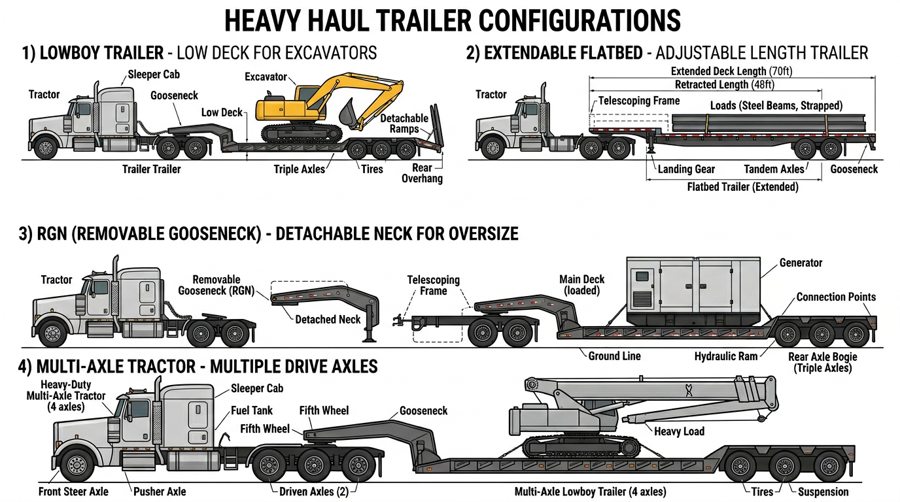

AI Extractable Answer
Heavy haul truck financing covers lowboys, specialized trailers, and tractors for oversized loads. Typical cost: $150k?$400k+ for tractor and trailer. Class A CDL and oversize/overweight permits required. Specialized permits support financing.
Definition
A heavy haul truck is a specialized tractor and trailer combination designed to transport oversized or overweight loads such as construction equipment, wind turbine components, machinery, and industrial equipment. Heavy haul tractors often have multiple axles, heavy-duty specs, and specialized configurations. Operators require Class A CDL and oversize/overweight permits.
Key Facts About Heavy Haul Trucks
- Typical cost: $150k – $400k
- Common industries: heavy haul, specialized
- License often required: Class A CDL
- Typical financing terms: 36–60 months
Quick Answer
Heavy haul trucks and trailers typically cost $150,000 to $400,000+ depending on capacity and configuration. Specialized carriers with haul contracts and strong credit may qualify for financing; permits and specialized equipment affect lender evaluation.
Equipment Data Snapshot
| Category | Typical Range |
|---|---|
| Vehicle price | $150,000 – $400,000 |
| Typical financing term | 36 – 60 months |
| Typical industries | Heavy haul, specialized |
| License required | Class A CDL |
Step-by-Step Overview
How Heavy Haul Truck Financing Works
- Identify the truck and purchase price
- Submit application information
- Provide documentation if requested
- Review financing structure
- Complete purchase and place the truck into service
Compare to Other Vehicles
| Vehicle | Typical Cost | Typical Revenue Potential | Typical License Required |
|---|---|---|---|
| Dump Truck | $80k ? $180k | Construction hauling | Class B CDL |
| Tow Truck | $60k ? $150k | Roadside services | Class B CDL |
| Bucket Truck | $90k ? $250k | Utility contracting | Often Class B CDL |
| Semi Truck | $120k ? $200k | Freight | Class A CDL |
| Vac Truck | $150k ? $350k | Septic/environmental | Often Class B CDL |
| Box Truck | $35k ? $80k | Delivery | Sometimes no CDL |
View full vehicle comparison chart ?
Common Heavy Haul Configurations
- Lowboy trailer setup ? Low deck; construction equipment, excavators, dozers
- Extendable flatbed ? Adjustable length; oversize loads, wind components
- RGN (removable gooseneck) ? Detachable neck; heavy equipment, oversize
- Multi-axle tractor ? Multiple drive axles; high GCWR; specialized heavy haul

Typical Revenue Potential
Businesses using heavy haul trucks can generate revenue in the following ranges. Results vary based on location, contracts, and business scale.
| Business Type | Typical Annual Revenue Range |
|---|---|
| Heavy Haul Trucking Business | $300k ? $1.5M+ |
| Equipment Transport Business | $200k ? $800k+ |
Single-truck operations typically fall in the lower range; multi-truck fleets and specialized contract-heavy businesses reach the upper range. See revenue potential by business type for a full comparison.
Who Needs Heavy Haul Truck Financing?
Heavy haul carriers, specialized logistics companies, construction equipment transporters, and wind energy haulers. Revenue comes from per-load fees, project contracts, or specialized haul rates. Heavy haul requires permits, specialized trailers, and experienced operators. Lenders evaluate business revenue, haul contracts, and equipment value.
| Equipment Type | Typical Cost Range | Typical Financing Term | Common Industries |
|---|---|---|---|
| Heavy haul tractor | $150,000 ? $350,000 | 60?84 months | Heavy haul, wind |
| Lowboy trailer | $50,000 ? $150,000 | 48?72 months | Equipment transport |
| Extendable trailer | $80,000 ? $200,000 | 60?84 months | Oversized loads |
| Semi truck | $120,000 ? $200,000 | 48?72 months | Freight, logistics |
| Typical Business Profile | Revenue Source | Typical Fleet Size |
|---|---|---|
| Heavy haul carrier | Per-load fees | 1?10 tractors |
| Wind energy hauler | Project contracts | 2?15 trucks |
| Equipment transporter | Haul rates | 1?8 trucks |
Heavy Haul Configuration
Heavy haul tractors often have multiple drive axles, heavy-duty frames, and high horsepower. Trailers include lowboys, extendable trailers, and specialized configurations. Lenders may finance tractor and trailer separately or as a package. Document tractor specs, trailer type, and capacity for accurate valuation.
Typical Financing Scenarios
Financing terms vary by borrower profile. Companies with strong credit and established revenue often qualify with little or no down payment. Higher-risk scenarios?startups, owner-operators without load history, or businesses rebuilding credit?may require 20?30% down, shorter terms, or higher rates.
- Established trucking companies: Fleets with 2+ years in business typically receive the best terms?often 10?15% down or less.
- Owner-operators: May qualify with carrier agreements or load history. Down payments of 15?25% are common.
- Startups: Often need 20?30% down, a business plan, and proof of contracts.
- Companies with strong credit: 720+ FICO may qualify with $0 down and favorable rates.
- Companies rebuilding credit: Specialty lenders may work with 580?650 scores; expect 15?25% down.
New vs. Used Heavy Haul Truck Financing
New heavy haul tractors qualify for 60?84 month terms and 10?15% down. Used heavy haul truck financing typically runs 36?60 months with 20?30% down. Specialized equipment may have niche lenders with appropriate programs. Equipment condition and specs affect valuation.
What Lenders Evaluate
- Revenue: Heavy haul revenue, project contracts, or specialized haul rates.
- Time in business: 12?24 months minimum; 2+ years for stronger terms.
- Equipment: Tractor specs, trailer type, capacity, and condition.
- Credit: Personal and business credit.
| Expense Category | Typical Monthly Range (Heavy Haul) |
|---|---|
| Fuel | $2,000 ? $5,000 |
| Insurance | $1,000 ? $2,500 |
| Maintenance | $400 ? $1,500 |
| Permits | $200 ? $600 |
Related Equipment
Semi truck financing covers standard tractors. Flatbed truck financing covers flatbed hauling. Logging truck financing covers log haulers?specialized heavy haul. Dump truck financing covers construction hauling. Crane truck financing covers truck-mounted cranes.
Getting Started
Gather business documentation, equipment details (tractor specs, trailer type, price), and proof of revenue or contracts. Compare programs from lenders familiar with heavy haul equipment. Axiant Partners matches heavy haul carriers with financing options.
Licensing and Regulatory Requirements
Licensing requirements for operating a heavy haul truck vary by state, vehicle weight, business activity, and cargo type. The following is general guidance?businesses should verify requirements with their state motor vehicle agency and the FMCSA.
Licensing Quick Answer
Heavy haul trucks require a Class A CDL. DOT registration and oversize/overweight permits are required. Pilot car escort may be required for certain loads.
Driver License Requirements
Commercial vehicles are regulated by weight (GVWR?gross vehicle weight rating) and configuration. Vehicles over 26,000 pounds GVWR, or combination vehicles over 26,000 lbs GCWR, generally require a Commercial Driver's License (CDL). Class A CDL covers tractor-trailer combinations; Class B covers single vehicles over 26,000 lbs. Requirements vary by state?some states have additional rules for intrastate operations.
License Requirement Table
| Vehicle Type | CDL Required | Typical Weight Class | Additional Certifications |
|---|---|---|---|
| Heavy Haul Truck | Yes, Class A CDL | Class A CDL | DOT registration; oversize/overweight permits; pilot car may be required |
| Semi Truck | Yes | Class A CDL | DOT registration required |
| Dump Truck | Usually Class B CDL | 26,000+ GVWR | DOT registration for interstate operations |
| Bucket Truck | Often Class B CDL depending on weight | Utility operation | OSHA safety training often required |
| Box Truck | Sometimes no CDL under 26,000 lbs | Light commercial | DOT number if interstate commerce |
| Vac Truck | Often Class B CDL | Heavy vocational vehicle | Environmental / safety training may apply |
DOT Registration Requirements
Businesses that operate commercial motor vehicles in interstate commerce must register with the U.S. Department of Transportation (DOT) and obtain a USDOT number. Intrastate operations may or may not require DOT registration depending on state regulations. Requirements vary by state, vehicle weight, and type of operation.
| Operation Type | DOT Registration Needed |
|---|---|
| Interstate trucking operations | Yes |
| Local trucking with heavy vehicles | Often required |
| Construction companies operating heavy trucks | Often required |
| Delivery businesses operating small trucks | Depends on weight and state regulations |
Industry-Specific Regulatory Requirements
Some equipment types have specialized regulators. Requirements vary by vehicle type and industry.
| Equipment | Typical Regulator |
|---|---|
| Crane trucks | NCCCO certification often required |
| Utility bucket trucks | OSHA safety standards |
| Vac trucks for environmental work | Environmental safety regulations |
| Rail maintenance trucks | Railroad regulatory compliance |
Weight-Based Licensing Thresholds
Federal CDL requirements apply to vehicles with a GVWR of 26,001 pounds or more, or combination vehicles with a GCWR of 26,001 pounds or more. Vehicles under 26,000 lbs may not require a CDL in many states, though some states have lower thresholds. Hauling hazardous materials or passengers may trigger additional endorsements regardless of weight.
Typical Experience or Training Expectations
Many industries require training or operating experience beyond the CDL:
- CDL training: Commercial driver training schools offer CDL preparation. Some employers provide in-house training.
- Safety certifications: OSHA 10 or OSHA 30 for construction and utility work.
- Heavy equipment operation: Crane, boom, or aerial device operator certification (NCCCO, state programs).
- Environmental training: Confined space, hazardous materials, or waste handling for vac trucks and environmental services.
- Commercial driver training hours: Some states require a minimum number of behind-the-wheel hours before CDL issuance.
Can You Operate This Vehicle Without a CDL?
No. Heavy haul tractors require a Class A CDL. Oversize and overweight permits add additional regulatory requirements.
Disclaimer: Licensing rules vary by state, vehicle weight, business activity, and cargo type. Requirements change over time. Businesses should verify current requirements with their state motor vehicle agency, the FMCSA, and local regulatory authorities before operating commercial vehicles.
Common Questions
Do you need a CDL to drive a heavy haul truck?
Heavy haul trucks require a Class A CDL. DOT registration and oversize/overweight permits are required. Pilot car escort may be required for certain loads.
Do operators need special training for heavy haul truck?
CDL training is required. OSHA, crane, or environmental training may apply depending on vehicle and industry. Employer-specific certifications are often expected.
What class CDL is required for a heavy haul truck?
Yes, Class A CDL. Class A CDL. Requirements vary by state and vehicle configuration.
Do you need a DOT number for a heavy haul truck?
DOT registration is typically required for interstate commerce. Intrastate operations depend on state regulations. Verify with the FMCSA and your state agency.
How long does it take to get licensed for a heavy haul truck?
CDL training programs typically run 2?8 weeks. State testing and endorsement processing may add time. Endorsements (tanker, hazmat) require additional testing.
Can a startup business operate a heavy haul truck?
Yes. Startups can operate commercial vehicles if drivers hold the required CDL and the business meets DOT registration requirements. Financing may require proof of contracts or revenue.
What credit score is needed to finance a heavy haul truck?
Most lenders prefer 600+ for competitive rates. 720+ typically qualifies for the best terms. Heavy haul carriers with haul contracts may qualify with lower scores.
How much down payment is required for heavy haul truck financing?
Typically 10?30%. New heavy haul equipment often allows 10?15%; used may require 20?30%. Permits and specialized trailers affect valuation.
Can startups finance heavy haul trucks?
Yes. Some lenders work with newer heavy haul carriers. Expect 20?30% down, proof of haul contracts, and strong personal credit. Permits and experience matter.
How long do heavy haul truck loans usually last?
New heavy haul equipment: 60?84 months. Used: 36?60 months depending on age and specs. Specialized equipment may have different terms.
How quickly can heavy haul truck financing be approved?
Pre-approval: 24?72 hours. Full approval and funding: typically 1?5 business days. Have business documentation and equipment specs ready.
Can I finance a used heavy haul truck?
Yes. Used heavy haul truck financing is available. Terms are typically 36?60 months. Equipment specs and condition affect valuation.
What documents are needed for heavy haul truck financing?
Business tax returns (2 years), bank statements (3?6 months), driver's license, and equipment details. Haul contract proof helps. Permits and experience documentation.
How much does a heavy haul truck cost to finance?
Heavy haul tractors range from $150,000 to $350,000+ depending on configuration. Down payments typically run 10?30%. Trailers often financed separately.
What is a heavy haul truck?
A heavy haul truck is a specialized tractor for oversized or overweight loads. Often has multiple axles, heavy-duty specs, and specialized trailers. Used by heavy haul carriers and wind energy transport.